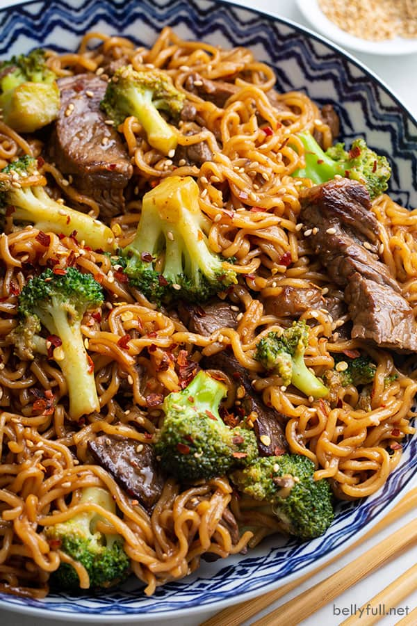

Beef & Broccoli Ramen Stir Fry

The popular Chinese restaurant beef and broccoli stir fry gets a delicious twist with ramen noodles, in this fantastic easy 30 minute meal recipe!
If you love traditional beef and broccoli stir fry, you have to try it with ramen noodles – it’s so good! This ramen stir fry recipe is sort of like if you took beef and broccoli and chow mein noodles, then mixed them together. It’s a super easy and complete meal, all made in one skillet >> also known as, my favorite type of dinner.
Ingredients
For the Sauce
- 1/4 cup low-sodium soy sauce
- 1 tablespoon cornstarch
- 1/3 cup beef broth
- 2 tablespoons honey
- 2 tablespoons hoisin sauce
- 1 tablespoon rice vinegar
- 1 tablespoon sesame oil
- 2 cloves garlic , minced
- 1/2 tablespoon grated ginger
- 1/8 teaspoon cracked red pepper flakes
For the Stir Fry
- 2 (3 ounce) packages ramen noodles , seasoning packets discarded
- 1 teaspoon sesame oil
- 2 tablespoons extra-virgin olive oil , divided
- 1 pound sirloin steak , trimmed of fat and sliced into 1 1/2-inch strips (about 1/4-inch thickness)
- 1/2 teaspoon kosher salt
- 1/2 teaspoon ground black pepper
- 3 cups fresh broccoli florets
- 1/2 cup water
- Sesame seeds , garnish
Steps
- Make the sauce: in a medium bowl, whisk together the soy sauce and cornstarch until combined and no lumps remain. Add in the beef broth, honey, hoisin sauce, rice vinegar, sesame oil, garlic, ginger, cracked red pepper; whisk to incorporate everything. Set aside.
- Bring a medium pot of water to boil; cook ramen until just tender, 2-3 minutes. Drain and rinse under cold water to stop them from cooking longer. Drizzle with the 1 teaspoon sesame oil to prevent sticking.
- In a large nonstick skillet warm 1 tablespoon of the olive oil over medium-high heat. Once the skillet is glistening hot, season steak with the salt and pepper and add to the skillet. Cook for about 3 minutes, without moving, to allow them to brown well on one side. Then stir and continue to cook for 2 more minutes, until cooked through. Remove the steak from skillet and drain off any accumulated grease.
- Add the other tablespoon of olive oil to the skillet, along with the broccoli. Add 1/2 cup of water to the skillet and cover. Steam broccoli for 2 minutes. (Broccoli should be bright green and fork tender, but not mushy.)
- Transfer the steak back to the skillet, along with cooked noodles.
- Give the sauce a stir and pour into the skillet; using tongs, mix together the ingredients as the sauce cooks. Cook for another 1-2 minutes until everything is coated and warmed through.
- Serve immediately, garnished with sesame seeds.